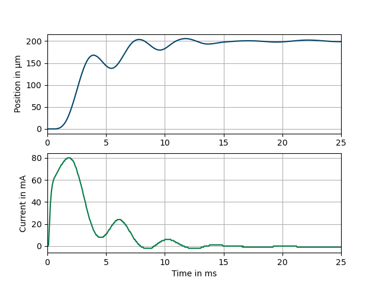
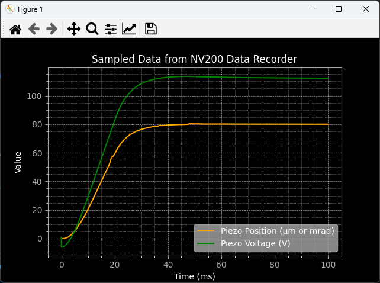

Data Recorder
If the device provides data recorder functionality, such as the NV200 amplifier
you can use the DataRecorder class to access the data
recorder functionality. For example, the NV200 data recorder consists of two memory banks that are
written to in parallel. In this way, two individual signals can be stored synchronously.
Example: A step input via the set command is used to trigger the data recorder and measure the piezo position and current of amplifier 1 for 25 ms.
The following example demonstrates how to use the nv200.data_recorder module with the
NV200Device from the nv200.nv200_device. It covers setting up the DataRecorder,
configuring data sources, and recording data.
import asyncio
import matplotlib.pyplot as plt
from nv200.nv200_device import NV200Device
from nv200.data_recorder import DataRecorderSource, RecorderAutoStartMode, DataRecorder
async def data_recorder_tests(device: NV200Device):
"""
Asynchronous function to test the functionality of the DataRecorder with a given device.
"""
# Move the device to its initial position and wait for a short duration to stabilize
await device.move_to_position(0)
await asyncio.sleep(0.4)
# Create a DataRecorder instance and configure it
recorder = DataRecorder(device)
await recorder.set_data_source(0, DataRecorderSource.PIEZO_POSITION)
await recorder.set_data_source(1, DataRecorderSource.PIEZO_VOLTAGE)
await recorder.set_autostart_mode(RecorderAutoStartMode.START_ON_SET_COMMAND)
rec_param = await recorder.set_recording_duration_ms(100)
print("Recording parameters:")
print(f" Used buffer entries: {rec_param.bufsize}")
print(f" Stride: {rec_param.stride}")
print(f" Sample frequency (Hz): {rec_param.sample_freq}")
# Start recording and move the device to a new position to record the parameters
await recorder.start_recording()
await device.move_to_position(80)
await asyncio.sleep(0.4)
print("Reading recorded data of both channels...")
# Read the recorded data from the DataRecorder
rec_data = await recorder.read_recorded_data()
# Use matplotlib to plot the recorded data
prepare_plot_style()
plt.plot(rec_data[0].sample_times_ms, rec_data[0].values, linestyle='-', color='orange', label=rec_data[0].source)
plt.plot(rec_data[1].sample_times_ms, rec_data[1].values, linestyle='-', color='green', label=rec_data[1].source)
show_plot()
Step by step guide to using the Data Recorder
This guide will walk you through the steps to set up and use the data recorder using the given example code.
Step 1: Import Necessary Modules
You will need to import the required modules to interact with the device and set
up the data recorder. These include NV200Device from nv200.nv200_device,
and DataRecorder, DataRecorderSource, and RecorderAutoStartMode from nv200.data_recorder.
import asyncio
from nv200.nv200_device import NV200Device
from nv200.data_recorder import DataRecorderSource, RecorderAutoStartMode, DataRecorder
Step 2: Setup the Device
The NV200Device instance is responsible for interacting with the hardware, allowing you
to control the movement of the device and manage the data recorder.
async def data_recorder_tests(device: NV200Device):
await device.move_to_position(0) # Move device to initial position (0)
await asyncio.sleep(0.4) # Allow the device to settle
Step 3: Create a DataRecorder Instance
Once the device is ready, create an instance of the DataRecorder class, passing t
he NV200Device instance to it. This will allow the DataRecorder to manage data recording.
recorder = DataRecorder(device)
Step 4: Set Data Sources for Recording
Choose what data each of the two channels should record. Example:
await recorder.set_data_source(0, DataRecorderSource.PIEZO_POSITION)
await recorder.set_data_source(1, DataRecorderSource.PIEZO_VOLTAGE)
Available options in DataRecorderSource include:
PIEZO_POSITION: Piezo position (μm or mrad)SETPOINT: Setpoint (μm or mrad)PIEZO_VOLTAGE: Piezo voltage (V)POSITION_ERROR: Position errorABS_POSITION_ERROR: Absolute position errorPIEZO_CURRENT_1: Piezo current 1 (A)PIEZO_CURRENT_2: Piezo current 2 (A)
Step 5: Set Auto-Start Mode
The set_autostart_mode function defines when the recording will start.
In this example, the recording starts when the set command is issued.
await recorder.set_autostart_mode(RecorderAutoStartMode.START_ON_SET_COMMAND)
You can choose different start modes from RecorderAutoStartMode:
OFF: No auto-start - recording starts immediately whenstart_recordingis calledSTART_ON_SET_COMMAND: Starts when a set command is issued after thestart_recordingcallSTART_ON_WAVEFORM_GEN_RUN: Starts recording when the waveform generator is started after thestart_recordingcall
Step 6: Configure Recording Duration
Next, you can set the recording duration. The set_recording_duration_ms method calculates
the necessary buffer size and sample rate based on the specified duration. You can print
the returned parameters to see that calculated values that have been transferred to the device.
rec_param = await recorder.set_recording_duration_ms(100)
print("Recording parameters:")
print(f" Used buffer entries: {rec_param.bufsize}")
print(f" Stride: {rec_param.stride}")
print(f" Sample frequency (Hz): {rec_param.sample_freq}")
This is the expected output for this example:
Recording parameters:
Used buffer entries: 1000
Stride: 1
Sample frequency (Hz): 10.0
Step 7: Start Recording
Once everything is set up, you can start the recording by calling:
await recorder.start_recording() # Starts the data recording
This will not start the recording immediately, but it will prepare the device to start recording when the specified trigger condition is met (in this case, when the set command is issued).
Step 8: Execute Device Move and Record Data
Now you can trigger the actual recording start by moving the device to a new position.
in this example, the move_to_position method triggers the data recorder to start recording.
await device.move_to_position(80) # Move the device to position 80
await asyncio.sleep(0.4) # Wait while the data is being recorded
Once the device has moved, you can read the recorded data:
recorded_data = await recorder.read_recorded_data() # Read the data from both channels
This will return a list containing data from channel 0 and channel 1. Each channel’s data is
stored as a ChannelRecordingData object, which includes:
- sample_times_ms:
The time at which each sample was taken (in milliseconds).
- values:
The recorded data values.
- source:
The data source that was recorded (e.g., “Piezo Voltage”).
Step 9: Plot the Recorded Data (Optional)
After retrieving the recorded data, you can plot it using a library like matplotlib:
prepare_plot_style()
plt.plot(rec_data[0].sample_times_ms, rec_data[0].values, linestyle='-', color='orange', label=rec_data[0].source)
plt.plot(rec_data[1].sample_times_ms, rec_data[1].values, linestyle='-', color='green', label=rec_data[1].source)
show_plot()
The expected output is a plot showing the recorded data from both channels:
Important
Important Considerations
- Device Connection:
Ensure the device is properly connected and configured before starting recording.
- Buffer Size Limitations:
The NV200 device has a fixed buffer size, so be mindful of memory constraints. Use the max_sample_buffer_size property to check the buffer size limit.
- Auto-Start Behavior:
Depending on the chosen auto-start mode, recordings might begin automatically or require explicit start commands.
API Reference
This module provides access to the NV200 data recorder functionality.
- class DataRecorder[source]
Bases:
objectData recorder class provides an interface for NV200 data recorder. The data recorder consists of two memory banks that are written to in parallel. In this way, two individual signals can be stored synchronously.
- class ChannelRecordingData[source]
Bases:
TimeSeriesWaveformData is a NamedTuple that represents waveform data.
- x_time
A list of time values (in seconds) corresponding to the waveform.
- Type:
List[float]
- y_values
A list of amplitude values corresponding to the waveform.
- Type:
List[float]
- sample_time_us
The sampling time in microseconds.
- Type:
int
- sample_factor
A factor used to calculate the sample time from the base sample time.
- Type:
int
- __init__(values: list, sample_time_ms: float, source: DataRecorderSource)[source]
Initialize the ChannelData instance with amplitude values, sample time, and source.
- Parameters:
values (list) – The amplitude values corresponding to the waveform.
sample_time_ms (int) – The sample time in milliseconds (sampling interval).
source (str) – The data recorder source
- property source: DataRecorderSource
Read-only property to get the maximum sample buffer size for the data recorder.
- class RecorderParam
Bases:
tupleRecorderParam(bufsize, stride, sample_freq)
- static __new__(_cls, bufsize, stride, sample_freq)
Create new instance of RecorderParam(bufsize, stride, sample_freq)
- bufsize
Alias for field number 0
- sample_freq
Alias for field number 2
- stride
Alias for field number 1
- __init__(device: NV200Device)[source]
Initializes the data recorder with the specified NV200 device.
- Parameters:
device (NV200Device) – The NV200 device instance to be used by the data recorder.
- _dev
Stores the provided NV200 device instance.
- Type:
- _sample_rate
The sample rate for data recording, initially set to None.
- Type:
int | None
- classmethod get_sample_period_ms_for_duration(milliseconds: float) float[source]
Calculates the sample period in seconds that is possible with the specified duration in milliseconds.
- classmethod get_sample_rate_for_duration(milliseconds: float) float[source]
Calculates the sample rate that is possible with the specified duration in milliseconds.
- property max_sample_buffer_size: int
Read-only property to get the maximum sample buffer size for the data recorder.
- async read_recorded_data() List[ChannelRecordingData][source]
Asynchronously reads recorded data for two channels and returns it as a list.
This method retrieves the recorded data for channel 0 and channel 1 by calling
read_recorded_data_of_channelfor each channel. The results are returned as a list ofChannelRecordingDataobjects.- Returns:
A list containing the recorded data for channel 0 and channel 1.
- Return type:
List[ChannelRecordingData]
- async read_recorded_data_of_channel(channel: int) ChannelRecordingData[source]
Asynchronously reads recorded data from a specified channel.
- Parameters:
channel (int) – The channel number from which to read the recorded data.
- Returns:
An object containing the recording source as a string and a list of floating-point numbers representing the recorded data.
- Return type:
- Raises:
Any exceptions raised by the underlying device communication methods. –
- async read_recorded_value(channel: int, index: int) float[source]
Reads a single recorded value from the specified channel at the given index.
- Parameters:
channel (int) – The channel number from which to read the recorded value.
index (int) – The index of the recorded value to read.
- Returns:
The recorded value at the specified index in the specified channel.
- Return type:
float
- Raises:
Any exceptions raised by the underlying device communication methods. –
- async read_single_value_from(source: DataRecorderSource) float[source]
Reads a single float value from the specified data recorder source.
You can use this method i.e. to read the current piezo voltage because this functionality is not provided by the NV200 device directly.
- Parameters:
source (DataRecorderSource) – The data source from which to read the value.
- Returns:
The recorded value from the specified source.
- Return type:
float
- async set_autostart_mode(mode: RecorderAutoStartMode)[source]
Sets the autostart mode of the data recorder.
- async set_data_source(channel: int, source: DataRecorderSource)[source]
Sets the channel and the source of data to be stored in the data recorder channel.
- async set_recording_duration_ms(milliseconds: float) RecorderParam[source]
Sets the recording duration in milliseconds and adjusts the recorder parameters accordingly.
This method calculates the appropriate stride, sample rate, and buffer size based on the specified recording duration and the recorder’s configuration. It then updates the recorder settings to match these calculated values.
- Parameters:
milliseconds (float) – The desired recording duration in milliseconds.
- Returns:
An object containing the updated buffer length, stride, and sample rate.
- Return type:
- Raises:
ValueError – If the calculated buffer size or stride is invalid.
- async set_sample_buffer_size(buffer_size: int)[source]
Sets the sample buffer size for each of the two data recorder channels (0..6144) A value of 0 means infinite loop over maximum length until recorder is stopped manually. If you would like to have an infinite loop, use the constant
DataRecorder.INFINITE_RECORDING_DURATION. You can get the maximum buffer size using themax_sample_buffer_sizeproperty.
- async stop_recording()[source]
Stops the recording process by invoking the
start_recordingmethod with False.
- async wait_until_finished(timeout_s: float = 10.0)[source]
Waits asynchronously until the recording process has finished or the specified timeout is reached.
- Parameters:
timeout_s (float) – The maximum time to wait in seconds. Defaults to 10.0.
- Returns:
True if the recording process finished within the timeout, False otherwise.
- Return type:
bool
- Raises:
asyncio.TimeoutError – If the timeout is reached before the recording process finishes.
- class DataRecorderSource[source]
Bases:
EnumEnum representing the source of data to be stored in the data recorder channel, ignoring the buffer (A or B) distinction.
- ABS_POSITION_ERROR = 4
Absolute position error
- PIEZO_CURRENT_1 = 6
Piezo current 1 (A)
- PIEZO_CURRENT_2 = 7
Piezo current 2 (A)
- PIEZO_POSITION = 0
Piezo position (μm or mrad)
- PIEZO_VOLTAGE = 2
Piezo voltage (V)
- POSITION_ERROR = 3
Position error
- SETPOINT = 1
Setpoint (μm or mrad)
- class RecorderAutoStartMode[source]
Bases:
EnumEnum representing the autostart mode of the data recorder.
- OFF = 0
Autostart off - start recording manually with recorder start command
- START_ON_SET_COMMAND = 1
Start on set-command
- START_ON_WAVEFORM_GEN_RUN = 2
Start on waveform generator run
- classmethod get_mode(value: int) RecorderAutoStartMode[source]
Given a mode value, return the corresponding RecorderAutoStartMode enum.